Alquiler de bicicletas urbanas

Ideal para recorrer Medellín, ir a estudiar o desplazarte por la ciudad sin depender de otros medios de transporte.
Incluye casco y candado para que puedas disfrutar del recorrido con mayor seguridad.Bienvenidos a la página #1 en alquiler de bicicletas, mira cómo contactarnos.
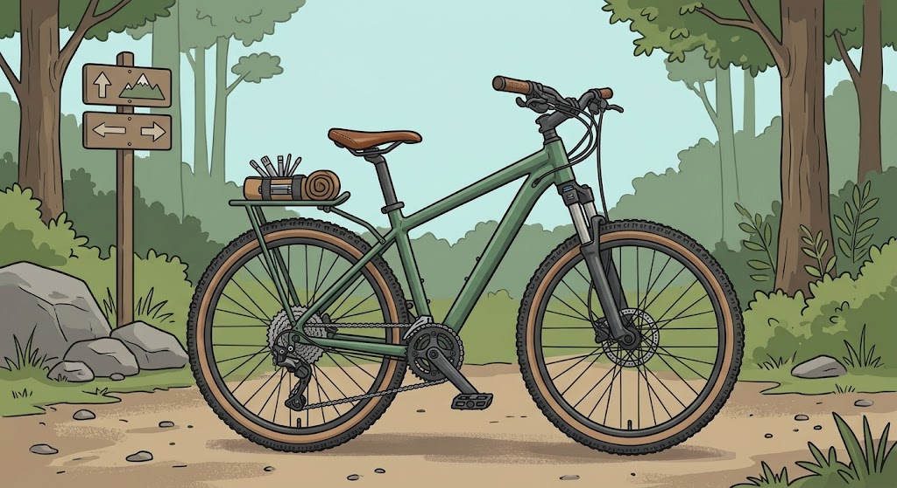
Somos Rueda Libre, un servicio de alquiler de bicicletas en Medellín que busca ofrecer una alternativa práctica y sostenible para recorrer la ciudad. Queremos que las personas disfruten de nuevos lugares y se movilicen de una manera diferente.
Ideal para recorrer Medellín, ir a estudiar o desplazarte por la ciudad sin depender de otros medios de transporte.
Incluye casco y candado para que puedas disfrutar del recorrido con mayor seguridad.
Pensadas para terrenos más exigentes, con caminos irregulares y subidas.
Incluye casco y candado.
Conoce Medellín sobre dos ruedas con un guía que te acompaña durante todo el recorrido. Hay tres rutas, de nivel fácil, medio y difícil, y salen los sábados y domingos.
Ver precios de recorridos guiadosMantén tu bicicleta lista para rodar. En nuestro taller realizamos ajustes y mantenimientos sencillos para que pedalees con tranquilidad.
Revisión básica de frenos, llantas y cadena.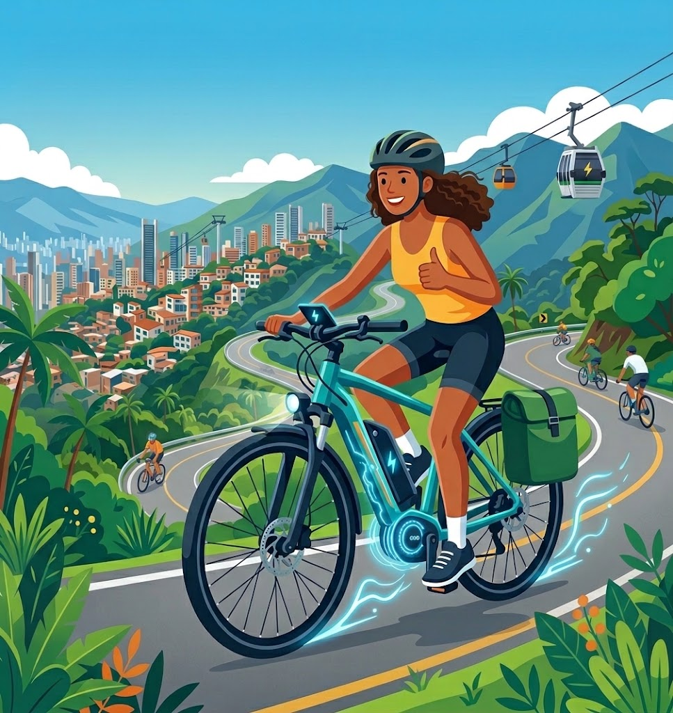
Pensadas para trayectos largos o con subidas: el motor eléctrico te ayuda a avanzar para que llegues con más energía a tu destino.
Incluye casco y candado.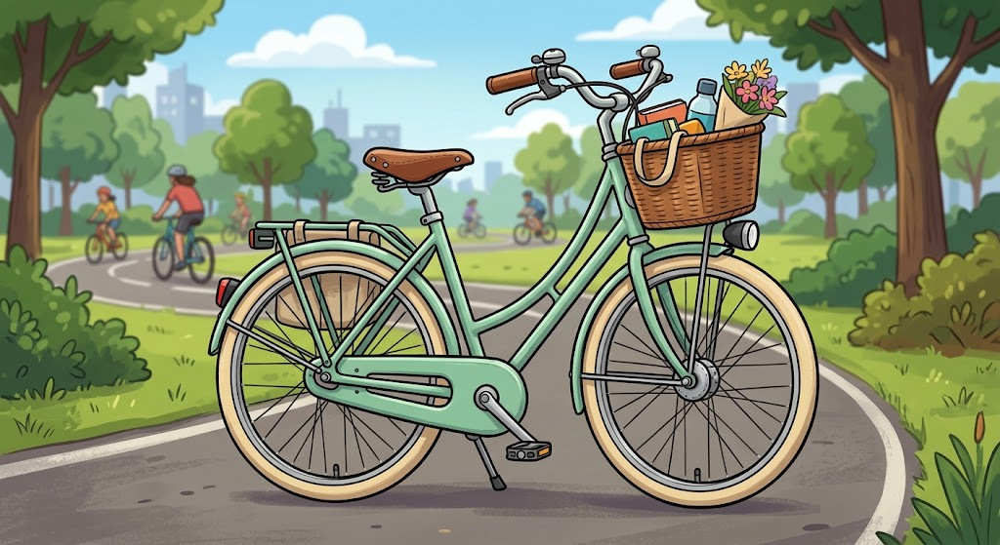
Cómoda y liviana para las ciclorrutas.
$10.000 por hora
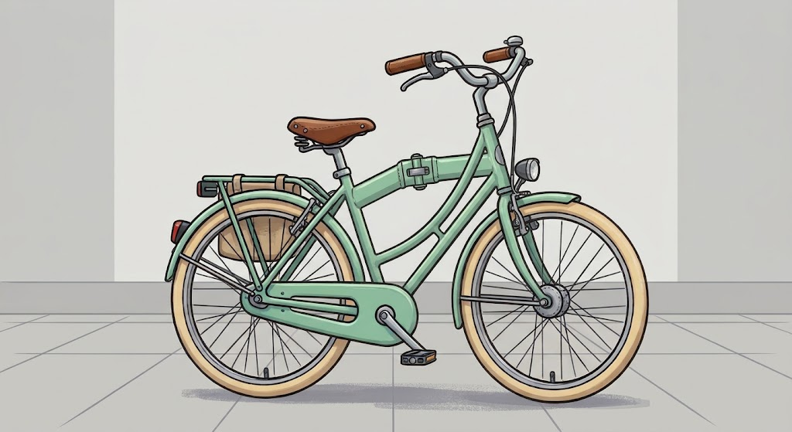
Se dobla en segundos; ideal para combinar con el metro.
$12.000 por hora
Suspensión delantera y 21 cambios para las subidas.
$15.000 por hora
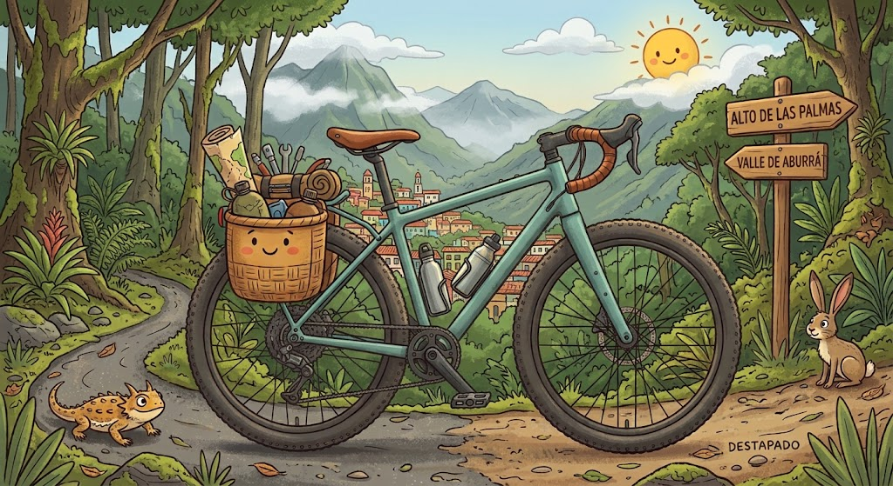
Para rutas mixtas de asfalto y destapado.
$18.000 por hora
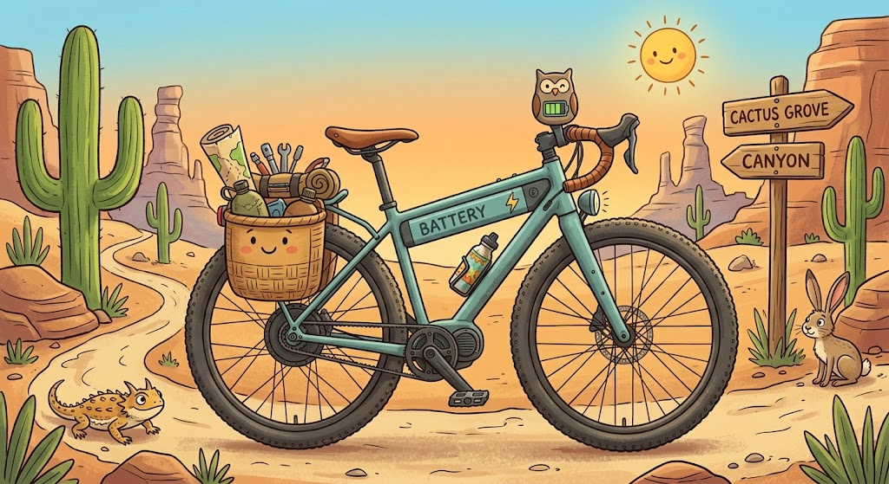
Asistencia eléctrica con 45 km de autonomía.
$25.000 por hora
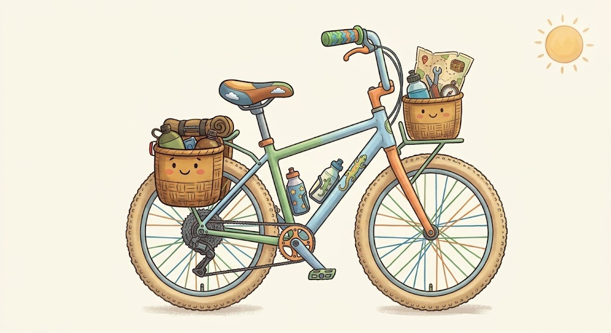
Para niños de 6 a 10 años.
$8.000 por hora
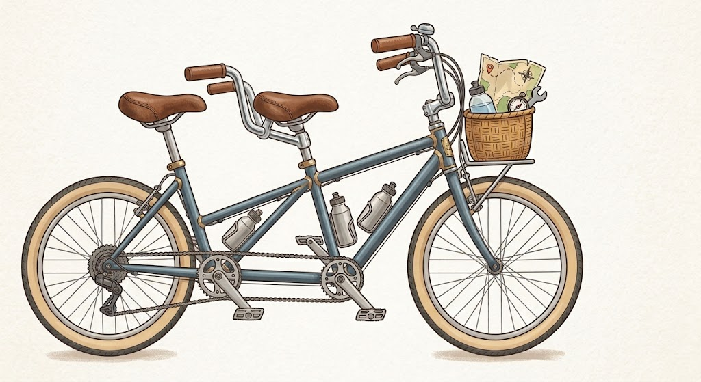
Para dos personas; perfecta para pasear en pareja.
$20.000 por hora
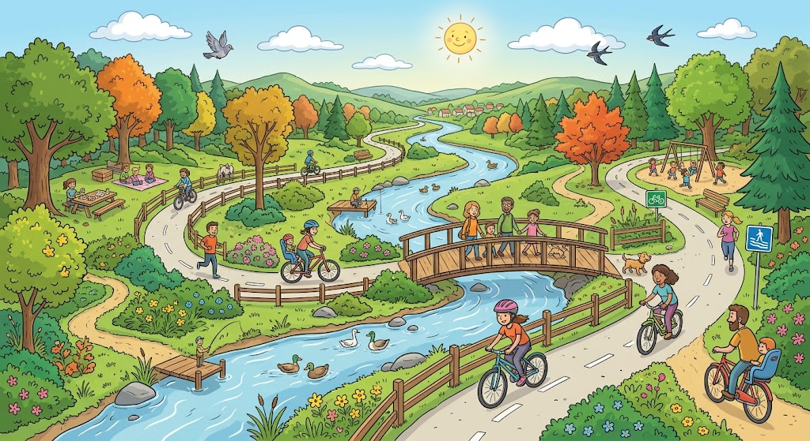
Nivel: Fácil
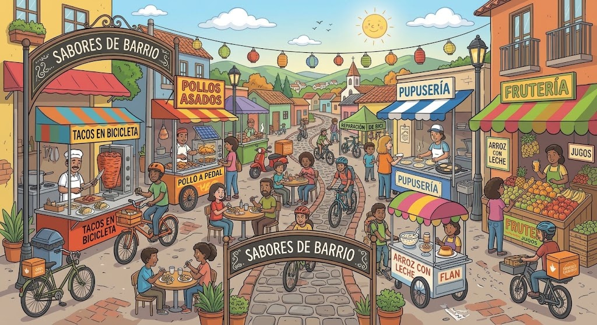
Nivel: Medio
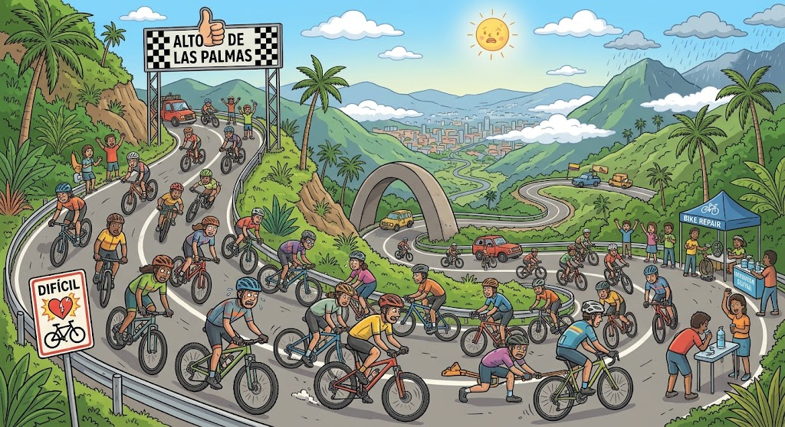
Nivel: Difícil